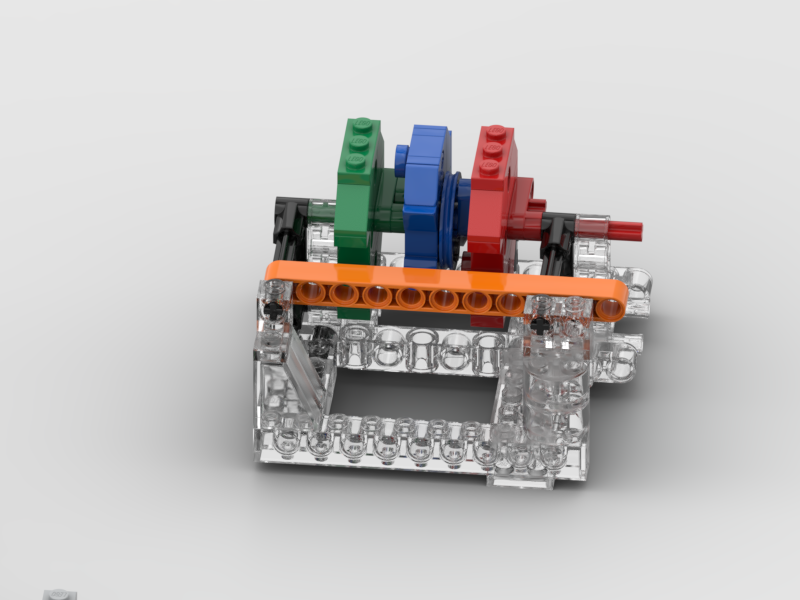
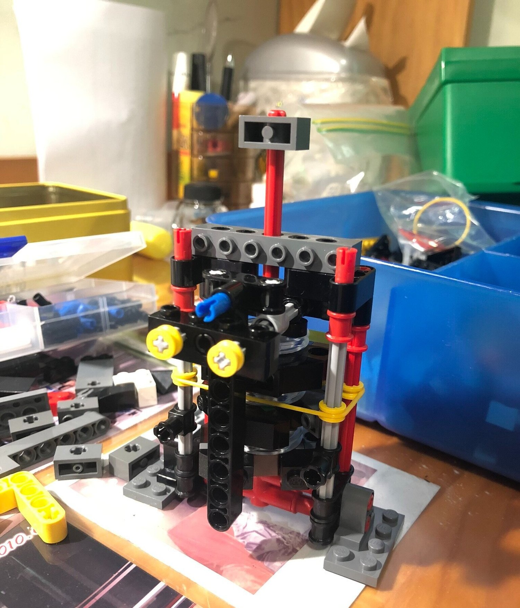

Safe

This is a 3-digit safe. Red, green and blue disk have notches (disks correspond to 1st, 2nd and 3rd digit, the notches corresponds to password number). The orange bar cannot slide inward unless the all notches face outward (the safe is cannot be unlocked unless given correct password combination).
One cannot directly rotate the disks. One can only rotate the red axle. Red axle is mounted on the red disk, so that they are one rigid body. However, before stopper pair is in contact, disks are free to rotate with respect to its neighbours (3 digits are independent). To rotate the blue disk, one need to first rotate the red disk for a full turn, so as to push the red-blue stopper pair in contact. With stopper pair in contact, red disk and blue disk becomes one rigid body, and blue disk will follow any further rotation of red disk. By induction, one can rotate the green disk by first rotating the red disk for two full turns.

This is the first prototype. I used the yellow rubber band to put some damping onto the middle disk (blue disk in first picture), so that it will stay in position when stopper is released.
Acknowledgement:
Studied from JKBrick’s design
Picture rendered with BrickLink Studio Oct. 2020